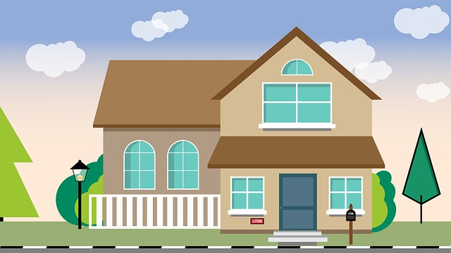

Homepage
binairstelsel
kleurmodellen
algemene informatie
bestandsformaten
compressie
Mijn naam is Roland uit H4A en dit is de wibsite die ik heb gemaakt voor informatica.
Video over wat een computer een computer maakt
Op deze pagina kan je een filmpje vinden over de werking van een computer.
